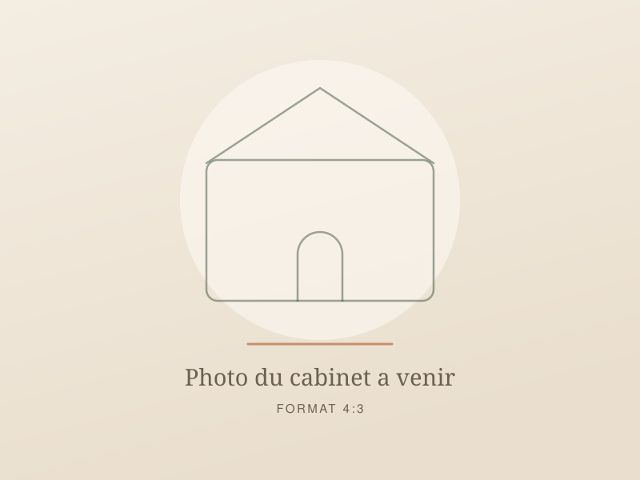

Le cabinet, à Juillan
À cinq minutes du centre de Tarbes en direction de l'aéroport. Stationnement gratuit devant, accès de plain-pied, rendez-vous uniquement sur réservation.
Coordonnées
- Adresse
- 8 avenue de la Bigorre
65290 Juillan - Téléphone
- 06 00 00 00 00
- Écrire
- Ouverture
- Mar-ven 9h-19h
Sam 9h-13h
Comment venir
Depuis le centre de Tarbes, comptez sept à huit minutes en voiture par l'avenue de la Marne, puis la direction Juillan et l'aéroport. Le cabinet est au rez-de-chaussée, la porte donne directement sur la rue.
La ligne de bus qui relie Tarbes à Juillan s'arrête à trois cents mètres. Prévoyez quelques minutes de marche, le trottoir est continu et plat.
Sur place
- Stationnement gratuit devant le cabinet, sans zone bleue.
- Accès de plain-pied, sans marche ni ascenseur.
- Salle d'attente calme, arrivée cinq minutes avant l'heure suffisante.

Photo de la façade à ajouter avant la mise en ligne réelle.
Les communes d'où viennent les personnes que je reçois
Le cabinet est à quelques minutes de la plupart des communes de l'agglomération. Au-delà de vingt minutes de route, la visioconférence est souvent le choix le plus raisonnable.
À moins de dix minutes
- Tarbes
- Juillan
- Odos
- Laloubère
À moins de vingt minutes
- Ibos
- Séméac
- Aureilhan
- Bordères-sur-l'Échez
Un peu plus loin
- Lourdes
- Vic-en-Bigorre
- Bagnères-de-Bigorre
- Partout, en visioconférence
Consulter en visioconférence
Le déroulé est identique : 1h30 pour le premier rendez-vous, une heure pour les suivants, et le même plan écrit envoyé par e-mail à la fin de la séance. Le lien de connexion arrive la veille, il s'ouvre dans le navigateur, sans installation.
Il vous faut une connexion correcte, un endroit au calme et de quoi prendre des notes. Une formule qui fonctionne bien : le premier rendez-vous au cabinet, les suivis à distance.